1 / 10
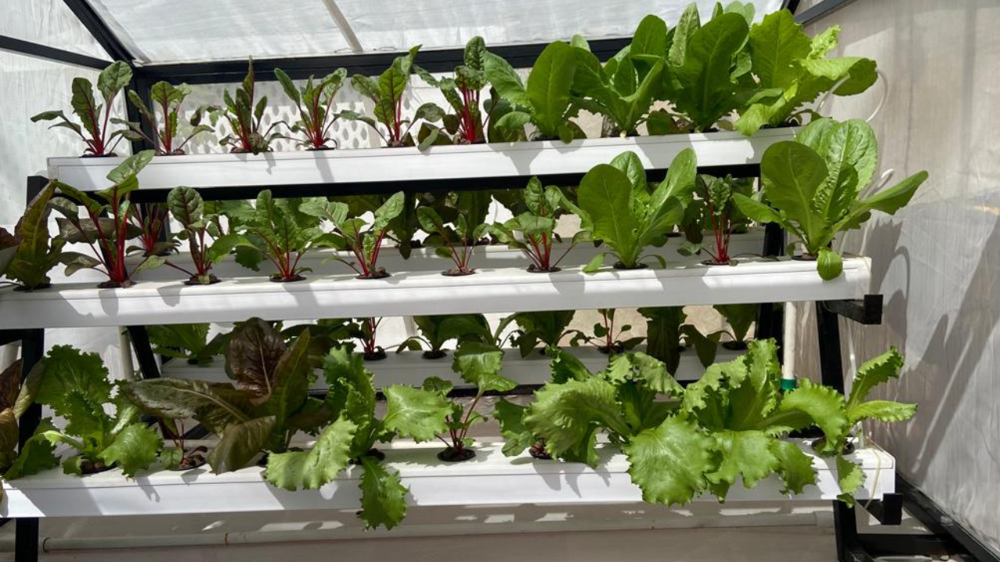
Hydroponics Setup Outdoor in Nethouse
2 / 10
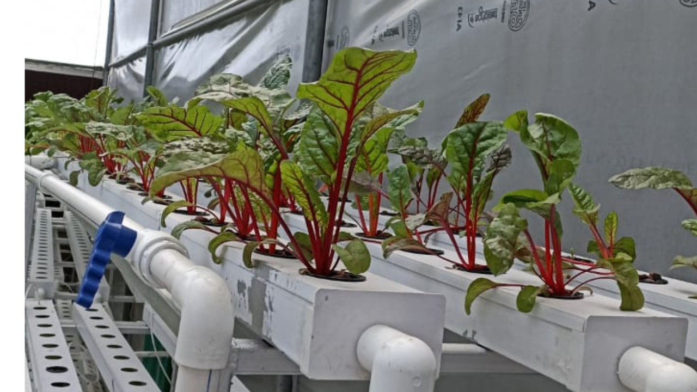
Hydroponics Setup Outdoor in Polyhouse
3 / 10
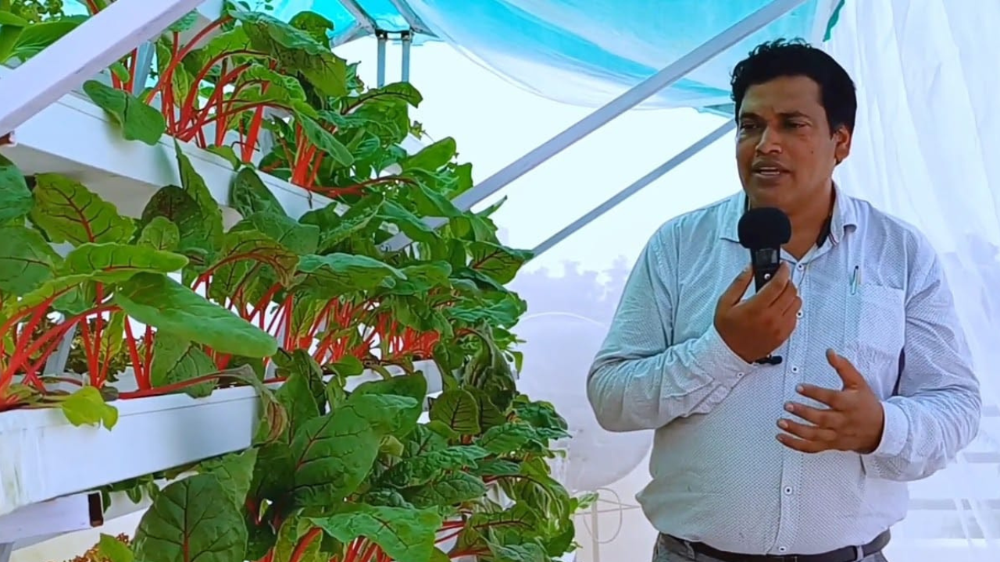
Terrace Garden Net house
4 / 10
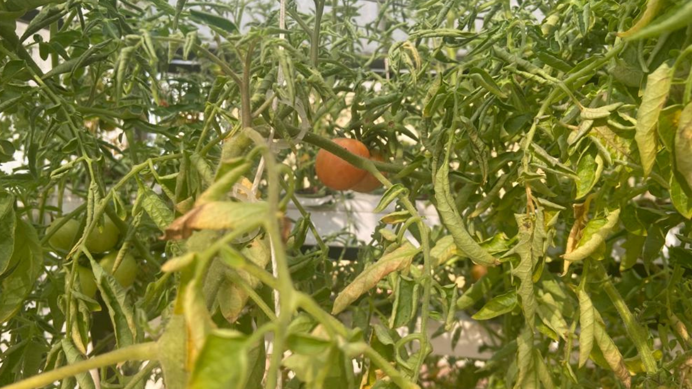
Tomato and Wine crops in Net House Terrace
5 / 10
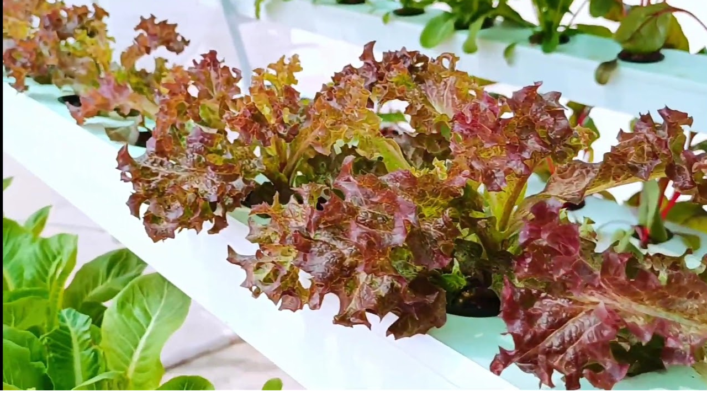
Lettuce Farming in Hydroponics
6 / 10
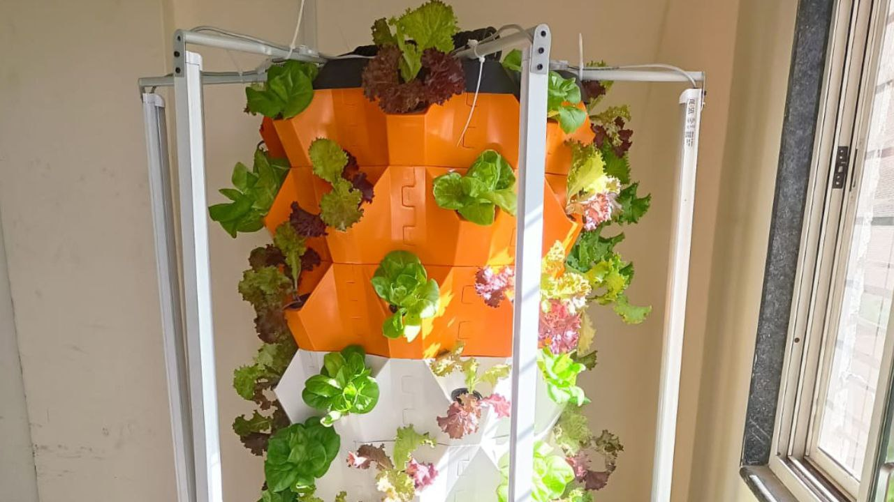
Aeroponics single tower for indoor
7/ 10
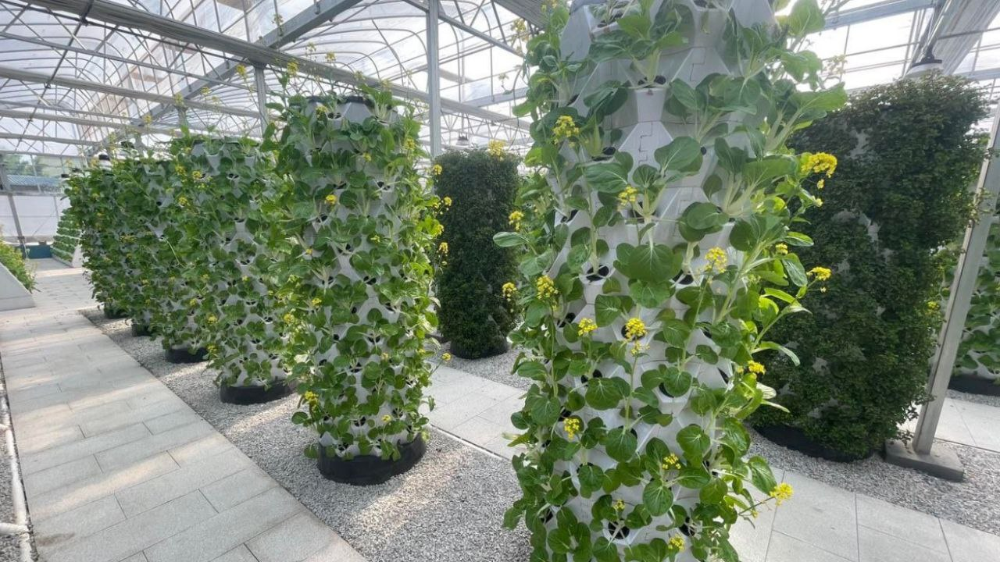
Aeroponics commerical farms for outdoor in polyhouse
8/ 10
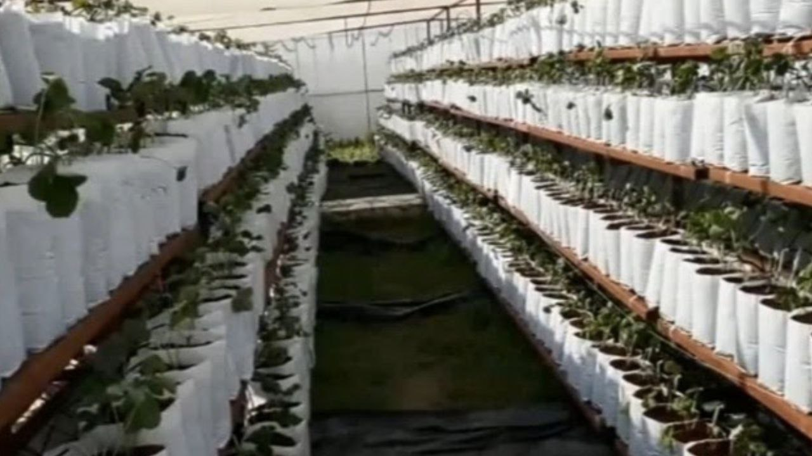
Soiless farming in Growbag outdoor in polyhouse
9/ 10
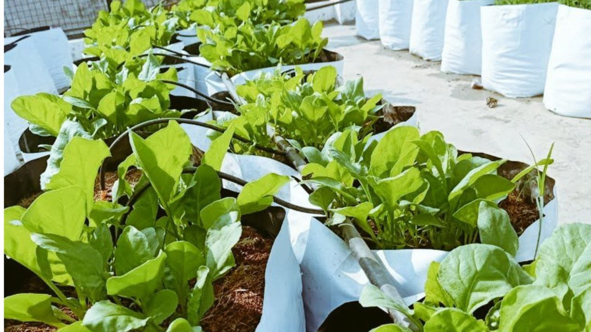
Soilesss growbag farming on terrace without polyhouse
10/ 10

Decorative 12 plant setup for house
❮
❯
Hydroponics Setups
Bijendra Gaushala is dedicated to empowering contemporary agripreneurs, investing the necessary energy and resources to unlock lucrative income sources. Its commitment to establishing prosperous "Commercial Hydroponics Setups" globally is demonstrated through its remarkably varied portfolio. Our projects have been installed all over India, take a look in video below.
Green Terrace, Green Lucknow
In today's fast-paced world, where green spaces are shrinking and access to fresh, organic produce is becoming a luxury, innovative solutions are needed. Lucknow, the city of nawabs, is embracing a green revolution of its own through a unique initiative called "Green Terrace, Green Lucknow" spearheaded by Bijendra Gaushala. This scheme brings hydroponics to the rooftops of urban dwellers, offering a sustainable and healthy way to cultivate fresh fruits and vegetables right at home. In this blog, we'll explore the advantages of hydroponics and how this initiative is making Lucknow greener and more beautiful.
The Hydroponics Advantage:
- Year-Round Harvest: Traditional soil-based farming is often limited by seasonal changes, but hydroponics allows you to grow crops all year round. This means you can enjoy your favorite fruits and vegetables regardless of the weather outside.
- Space-Efficient: Hydroponic systems are incredibly space-efficient, making them ideal for urban settings. Green Terrace, Green Lucknow, utilizes rooftop spaces, transforming them into vibrant gardens without the need for extensive land.
- Water Conservation: Hydroponics uses significantly less water than traditional farming. By recirculating nutrient-rich water, this method minimizes water wastage, a crucial consideration in regions with water scarcity.
- No Soil Contaminants: Hydroponic systems eliminate soil-related issues like pests, diseases, and soil-borne contaminants. Your crops are cleaner and healthier.
- Improved Growth: Plants grown hydroponically often mature faster and produce higher yields. The controlled environment ensures optimal conditions for growth.
- Purified Air: Hydroponic plants can help improve the air quality in your home. They absorb carbon dioxide and release oxygen, contributing to a fresher and healthier indoor atmosphere.
Green Terrace, Green Lucknow: Bringing Hydroponics to Your Doorstep
Bijendra Gaushala's "Green Terrace, Green Lucknow" scheme is a game-changer for urban farming enthusiasts. Here's how it works:
- Terrace Transformation: The scheme involves the installation of a hydroponic system on the terraces of interested individuals. This transforms often-underutilized rooftop spaces into lush green gardens.
- Guidance and Support: Bijendra Gaushala provides comprehensive guidance and support to participants, ensuring they can successfully grow a variety of crops hydroponically. From choosing the right crops to maintaining the system, expert assistance is readily available.
- Community Building: The initiative fosters a sense of community among participants. Neighbors come together to exchange tips and share the joy of homegrown produce, fostering a sense of unity and sustainability.
- Greener, Healthier Lucknow: "Green Terrace, Green Lucknow" not only beautifies the city but also contributes to a healthier environment. With more greenery and improved air quality, Lucknow becomes a better place to live.
In conclusion, hydroponics is revolutionizing urban farming by enabling people to grow fresh fruits and vegetables right at home, and "Green Terrace, Green Lucknow" is leading the way in Lucknow's green transformation. By embracing this initiative, you can not only enjoy the benefits of hydroponics but also play a vital role in making your city greener and healthier. So, why wait? Join the movement and experience the joy of harvesting your own produce while contributing to a more sustainable future for Lucknow!

Hydroponics Indoor Vertical Farming with grow light
Automation Grade: Semi-Automatic
Capacity: 12 Plant/Setup
Size/Dimension: 16x20 inch
Country of Origin: Made in India
Weight: 2.350 kg
Material: Polypropylene
Shape: Rectangular
Product Description:
Experience the future of farming with our Hydroponic Setup with Growlight. This semi-automatic system features a capacity of 12 plants per setup, all housed within a durable polypropylene rectangular structure measuring 16x20 inches. Designed and made in India, this setup offers an innovative solution for indoor hydroponics farming.
One of the standout features is the built-in growlight, ensuring optimal conditions for your plants to thrive. This compact system allows you to grow a variety of plants indoors, contributing to increased oxygen levels and even acting as a natural air purifier. Discover the convenience, efficiency, and green benefits of our Hydroponic Setup with Growlight.
Step into the future of farming with our Hydroponics Unit – easy, efficient, and delicious!
Rs 9,000/Square FeetMinimum Order Quantity: 300 Sq/Feet
Get Best Quote
Small Hydroponics Setup
Automation Grade: Semi-Automatic
Capacity: 12 Plant/Setup
Size/Dimension: 16x20 inch
Country of Origin: Made in India
Weight: 2.350 kg
Material: Polypropylene
Shape: Rectangular
Experience the future of farming with our Hydroponic Setup with Growlight. This semi-automatic system features a capacity of 12 plants per setup, all housed within a durable polypropylene rectangular structure measuring 16x20 inches. Designed and made in India, this setup offers an innovative solution for indoor hydroponics farming.
One of the standout features is the built-in growlight, ensuring optimal conditions for your plants to thrive. This compact system allows you to grow a variety of plants indoors, contributing to increased oxygen levels and even acting as a natural air purifier. Discover the convenience, efficiency, and green benefits of our Hydroponic Setup with Growlight.
Rs 5,000/Set
Minimum Order Quantity: 1 Set
Get Best Quote

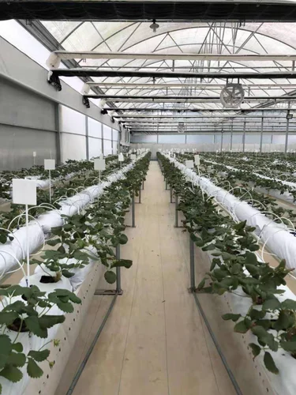
Soil Less Hydroponic in Cocopeat Outdoor
Color: White
Material: UPVC
Brand: Bijendra Gaushala
Size/Dimension: As per requirement
Automation Grade: Automatic
Length: As per requirement
Shape: Rectangular
Capacity: As much required
We at Bijendra Gaushala are committed to providing organic vegetables and fruits to every Indian. Our Cocopeat with Hydroponics Farm is designed to cater to the mindset of growth and good food. Whether you want to earn good profits or prioritize your health, our hydroponic farms using cocopeat can be installed on your rooftop or field.
Soilless farming and hydroponics with Cocopeat grow bags offer numerous benefits. These include quicker nutrient absorption due to the high cation exchange capacity of coco peat. This forgiving medium enables easier rewetting and faster water absorption, leading to excellent yield. Made from coconut fibers, sand, and minerals, Cocopeat grow bags are highly water-absorbent, making them perfect for hydroponic farming.
By adopting soilless farming and hydroponics, farmers can achieve higher yields with fewer resources compared to traditional soil-based methods. The efficiency of our hydroponic setup contributes to sustainable and efficient agricultural practices.
Rs 490 / Square Feet
Minimum Order Quantity: 200 Square Feet
Get Best Quote
 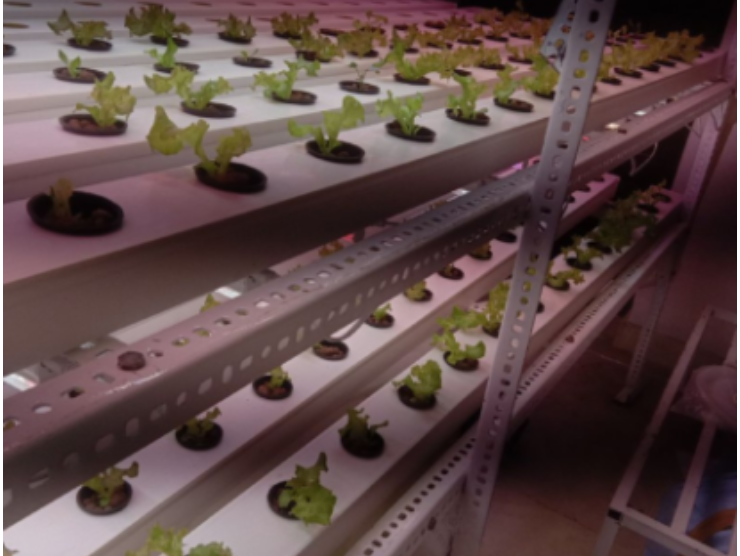
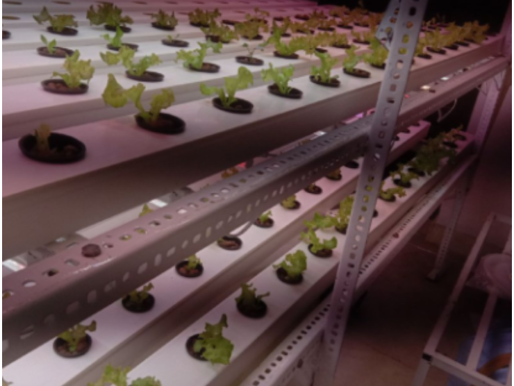